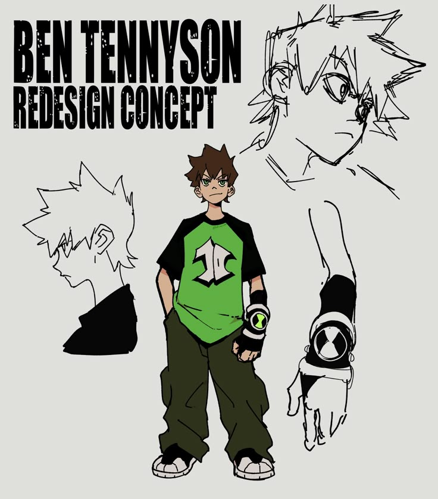
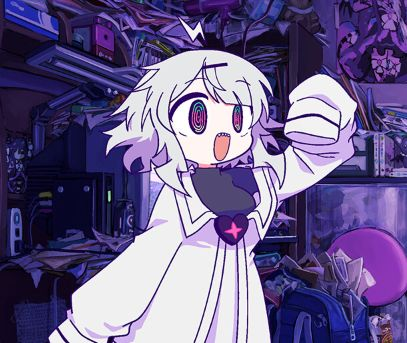
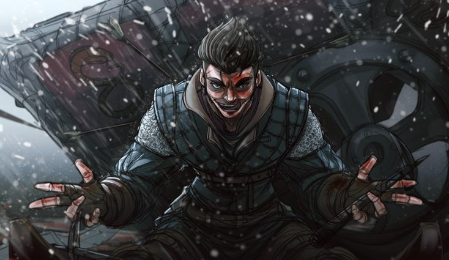

Benimaru
Agente recém contratado, e suas habilidades ainda estão sendo moldadas, mas grande potêncial.
Destiny
Agente recém contratada, as habilidades ainda sendo moldadas, mas com grande potêncial ofensivo.
Ivar Kamo
Agente recém contratado, as habilidades ainda sendo moldadas, controle de maldições, grande potêncial.
Valdir

Agente recém contratado, sem informações por enquanto.
Edith

Agente recém contratada, físico extremamente aprimorado, grande potêncial, ótima em missões de reconhecimento.